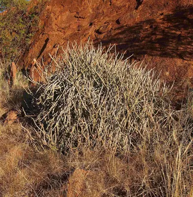

pranet · 出典付きの植物図鑑
حرملة (نبات) ☠
Cynanchum viminale (L.) L. · Apocynaceae

Cynanchum viminale is a leafless succulent plant in the family Apocynaceae. The species is native to West Africa, the Indian Ocean and Western Pacific region. The species' natural range extends from South Africa throughout much of Africa and the Middle East to India, Indochina, Southern China, Indomalaya and into Meganesia. The species is also found on several Indian Oceans islands including Mauritius, Réunion and the Seychelles.
出典: Wikipedia (en): Cynanchum viminale · CC BY-SA 4.0
異名: Apocynum viminale Bassi, Apocynum viminale Bassi ex Schult., Asclepias aphylla Thunb., Cynanchum aphyllum (Schult.) Schltr., Cynanchum aphyllum L., Cynanchum viminale Blanco, Euphorbia pendula (Haw.) Sweet, Euphorbia viminalis L., Monostemma aphyllum (Schult.) Turcz., Sarcostemma aphyllum Schult., Sarcostemma viminale (L.) R.Br.
同定や利用は自己責任でお願いします。この図鑑だけを根拠に野生の植物を食べないでください。
出典
- 学名: World Flora Online Plant List 2026-06 · CC0 1.0
- 名前: Wikipedia の記事名と Wikidata · CC0 1.0（Wikidata）。記事名は事実
- 説明: Wikipedia (en): Cynanchum viminale · CC BY-SA 4.0
- 食用・毒性: World Checklist of Useful Plant Species (Diazgranados et al. 2020, RBG Kew) · CC BY 4.0
- 分布: World Checklist of Vascular Plants (WCVP), RBG Kew, version 2026-06-04 · CC BY 3.0
このページは pranet のデータから自動生成しています。コードは MIT、データは項目ごとのライセンス（説明）。